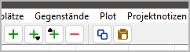
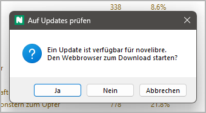
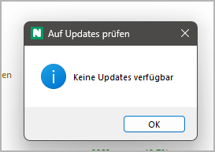

nv_updater
Benutzerhandbuch
Diese Seite gilt für die neueste Ausgabe von nv_updater. Sie können sie mit Hilfe > Update-Prüfer Online-Hilfe öffnen.
Das Plugin fügt dem novelibre-Extras-Menü den Eintrag Auf Updates prüfen hinzu, und dem Hilfe-Menü den Eintrag Update-Prüfer Online-Hilfe.

Das Plugin installieren
Starten Sie entweder die heruntergeladene Datei nv_updater_vx.x.x.pyzw durch Doppelklick (Windows/Linux-Desktop),
oder führen Sie
`python nv_updater_vx.x.x.pyzw`(Windows), bzw.`python3 nv_updater_vx.x.x.pyzw`(Linux) auf der Kommandozeile aus.
„x.x.x“ ist dabei die Versionsnummer.
Wichtig
Viele Webbrowser erkennen den Download als ausführbare Datei und bieten an, sie direkt zu öffnen. Damit wird die Installation gestartet.
Abhängig von Ihren Sicherheitseinstellungen kann es allerdings auch passieren, dass Ihr Browser den Download der ausführbaren Datei zunächst verweigert. In diesem Fall ist Ihre Bestätigung oder eine zusätzliche Handlung erforderlich. Falls das nicht geht, können Sie auf den Download der zip-Datei ausweichen.
Die Update-Prüfung starten
Starten Sie die Update-Prüfung über das Hauptmenü: Extras > Auf Updates prüfen.
Wenn ein Update gefunden wird, erscheint eine Meldung.

Sie haben die Wahl:
Ja öffnet Ihren Webbrowser mit der Download-Adresse.
Nein überspringt dieses Update.
Abbrechen bricht die Update-Prüfung ab.
Wichtig
Das nv_updater-Plugin stößt nur den Download durch den System-Webbrowser an. Wenn ein Downloadverzeichnis vorgegeben ist, werden alle Zip-Dateien mit den Programmupdates dort abgelegt. Dann führen Sie die Installation wie gewohnt aus.
Falls kein Update gefunden wird, erscheint am Ende eine Meldung.
